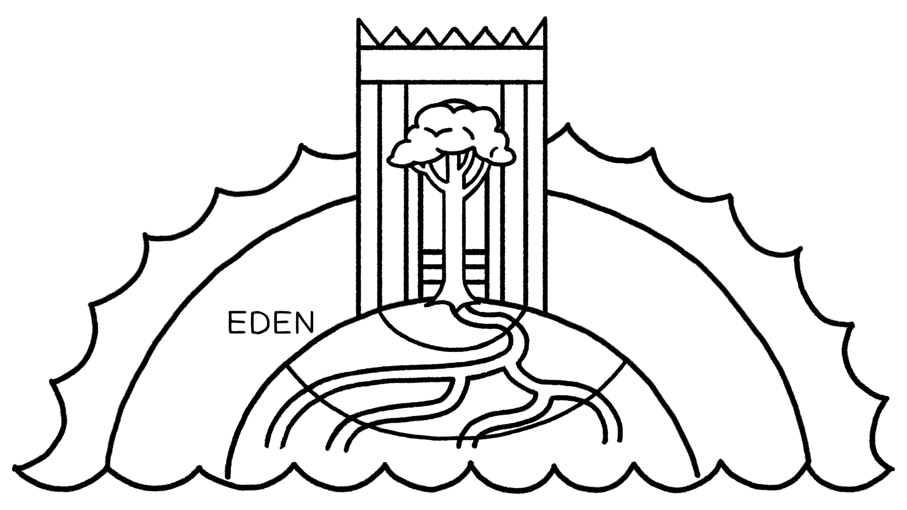

Rios e fontes dão vida na Bíblia. Um rio flui do Éden para regar toda a Terra, e rios descem de montanhas santas em Ezequiel, Salmo 46 e Apocalipse.Rivers and springs are life-giving in the Bible. A river flows out of Eden to water the whole Earth, and rivers flow down from holy mountains in Ezekiel, Psalm 46, and Revelation.
Rios, fontes e poços se tornam dons divinos de vida no deserto no momento exato para Agar, os israelitas e a mulher samaritana quando Jesus lhe dá água viva. O livro do Apocalipse também fala de um rio de vida fluindo para baixo.Rivers, springs, and wells become divine gifts of life in the desert at just the right moment for Hagar, the Israelites, and the Samaritan woman when Jesus gives her living water. The book of Revelation also talks about a river of life flowing down.
A Terra Bíblica e Seus Fundamentos em uma Visão de Mundo ModernaThe Biblical Earth and Its Foundations in a Modern Worldview
“Vimos que na cosmologia bíblica, a terra é plana ... e mantida no lugar por pilares. Poderíamos muito bem perguntar: 'Mas sobre o que os pilares estão apoiados?' E os autores bíblicos nunca sequer tentam responder a essa pergunta. Se o tivessem feito, certamente não teriam apelado para um regresso eterno de pilares sobre pilares. Aqui podemos recordar o comentário obscuro do livro de Jó: '[Deus] ... suspende a terra sobre o nada (Jó 26:7). Os pilares, poderíamos dizer, estão suspensos sobre o nada! Então por que eles não caem? Porque, diz Jó, Deus os suspende lá ... Para os autores bíblicos, os pilares falam simplesmente da estabilidade da terra ... e a terra é totalmente dependente de Deus, não apenas pelo seu começo, mas em cada momento da sua existência. O universo não se fundamenta a si mesmo; ele não explica o seu próprio ser ... Falar do pilar da terra não é uma afirmação física primitiva, mas uma profunda afirmação metafísica.”“We have seen that in biblical cosmology, the earth is flat ... and held in place by pillars. We might well ask, 'But what are the pillars standing on?' And the biblical authors never even try to answer that question. Had they done so, they would certainly not have appealed to an eternal regress of pillars upon pillars. Here we may recall the obscure comment from the book of Job: '[God] ... hangs the land upon nothing (Job 26:7). The pillars, we might say, are suspended over nothing! So why don’t they drop? Because, says Job, God suspends them there ... For the biblical authors, the pillars speak simply of the stability of the earth ... and the earth is utterly dependent on God, not just for its beginning, but at each and every moment of its existence. The universe does not ground itself; it does not explain its own being ... To speak of the earth’s pillar is not a primitive physical claim, but a profound metaphysical one.”
Parry, Robin A. (2014). The Biblical Cosmos: A Pilgrim's Guide to the Weird and Wonderful World of the Bible. Cascade Books. 199-200.Parry, Robin A. (2014). The Biblical Cosmos: A Pilgrim's Guide to the Weird and Wonderful World of the Bible. Cascade Books. 199-200.
Montanhas e Rios em Gênesis 1-2Mountains and Rivers in Genesis 1-2
Gênesis 1 e 2 retratam o surgimento da terra seca e do Éden como uma montanha cósmica onde Céu e Terra se sobrepõem. Em Gênesis 1, Deus doma o mar, e em Gênesis 2, Deus canaliza as águas escuras abaixo em águas que dão vida sobre a terra seca.Genesis 1 and 2 depict the emergence of the dry land and Eden as a cosmic mountain where Heaven and Earth overlap. In Genesis 1, God tames the sea, and in Genesis 2, God channels the dark waters below into life-giving waters on the dry land.
1:2a: “E a terra era sem forma e vazia (heb. tohu / תהו)”1:2a: “And the land was wild (Heb. tohu / תהו) and waste”
1:2b: “E havia trevas sobre a face do abismo profundo (heb. tehom / תהום)”1:2b: “And darkness was on the face of the deep abyss (Heb. tehom / תהום)”
1:2c: “E o Espírito de Deus pairava sobre a face das águas (heb. hamayim / המים)”1:2c: “And the wind/spirit of God was hovering on the face of the waters (Heb. hamayim / המים)”
Estas três linhas são paralelas, combinando termos-chave a fim de contrastá-los. No lugar das trevas, encontramos o oposto, o Espírito de Deus, por meio do qual a palavra falada de Deus trará a luz.These three lines are parallel, matching key terms in order to contrast them. In the place of darkness, we find the opposite, the Spirit of God, through whom the spoken word of God will bring about light.
O duplo “sobre a face do” (על־פני) destaca os dois termos paralelos para águas. Estes se referem à mesma realidade (isto é, as águas do oceano), mas com duas interpretações diferentes.The double “on the face of the” (על־פני) highlights the two parallel terms for waters. These refer to the same reality (i.e., ocean waters) but with two different interpretations.
2b: Quando as trevas estão presentes, as águas são ameaçadoras e destrutivas.2b: When darkness is present, the waters are threatening and destructive.
2c: Quando o Espírito de Deus está presente, as águas são controladas e podem dar vida.2c: When God’s Spirit is present, the waters are controlled and can be life-giving.
“A água é comumente concebida [na Bíblia e na literatura do AOP] como um símbolo das forças opositoras da vida, um símbolo ambíguo de vida e morte ... A água é simbólica de morte quando não é controlada (demais ou de menos), e de vida quando é controlada, porque provê crescimento e fertilidade. Isto resume o movimento de Gênesis 1:2 a 2:10-14, das águas caóticas do abismo escuro aos rios frutíferos do Éden. Na Bíblia Hebraica, este controle decisivo das águas é a prerrogativa de Deus, que é soberano sobre a vida e a morte ... Neste sentido, 'abismo profundo' significa o aspecto negativo ou ameaçador das águas, enquanto 'as águas' representam o aspecto positivo da água sob controle.”“Water is commonly conceived [in the Bible and ANE literature] as a symbol of the oppositional forces of life, an ambiguous symbol of life and death ... Water is symbolic of death when it is uncontrolled (too much or too little), and of life when it is controlled, because it provides growth and fertility. This summarizes the movement from Genesis 1:2 to 2:10-14, from the chaotic waters of the dark abyss to the fructifying rivers of Eden. In the Hebrew Bible, this decisive control of the waters is the prerogative of God who is sovereign over death and life ... In this sense, 'deep abyss' signifies the negative or threatening aspect of the waters, while 'the waters' represent the positive aspect of water under control.”
Morales, Michael (2012). Tabernacle Prefigured: Cosmic Mountain Ideology in Genesis and Exodus. Peeters Publishers. 54-55.Morales, Michael (2012). Tabernacle Prefigured: Cosmic Mountain Ideology in Genesis and Exodus. Peeters Publishers. 54-55.
Gênesis 2:10-14: O Rio do ÉdenGenesis 2:10-14: The River of Eden
“E um rio saiu do Éden para regar o jardim, e dali se separou e se tornou quatro cabeças.” 1. “O nome do primeiro era Pisom (פישון = 'saltador/manancial'); ele contornava toda a terra de Havilá onde há ouro. E o ouro daquela terra é bom. Lá estão o bdélio e a pedra de ônix.”“And a river went out from Eden to water the garden, and from there it was separated and it became four heads.” 1. “The name of the first was Pishon (פישון = 'leaper/springer'); it went around the whole land of Havilah where there is gold. And the gold of that land is good. There is the bdellium and onyx stone.”
2. “O nome do segundo rio é Giom (גיחון = 'jorrador'); ele contorna toda a terra de Cuxe.” 3. “O nome do terceiro rio é Hidequel; ele vai para o leste da Assíria.” 4. “E o quarto rio é o Eufrates.” Rios eram comumente vistos como tendo sua fonte no abismo profundo abaixo do terreno.2. “The name of the second river is Gihon (גיחון = 'gusher'); it goes around all the land of Cush.” 3. “The name of the third river is Hideqel; it goes east of Assyria.” 4. “And the fourth river is the Euphrates.” Rivers were commonly viewed as having their source in the deep abyss below the land.
Deuteronômio 33:13-16 Tradução do InstrutorDeuteronomy 33:13-16 Instructor's Translation
13 Sobre José ele disse: “Que o SENHOR abençoe a sua terra com o orvalho precioso do céu acima e com o abismo profundo (heb. tehom) que jaz abaixo; 14 com o melhor que o sol produz e o mais fino que a lua pode render; 15 com os dons escolhidos dos montes antigos e a fecundidade das colinas eternas; 16 com os melhores dons da terra e a sua plenitude e o favor daquele que habitou na sarça ardente. Que tudo isso descanse sobre a cabeça de José, sobre a fronte do príncipe entre os seus irmãos.13 About Joseph he said: “May the LORD bless his land with the precious dew from heaven above and with the deep abyss (Heb. tehom) that lie below; 14 with the best the sun brings forth and the finest the moon can yield; 15 with the choicest gifts of the ancient mountains and the fruitfulness of the everlasting hills; 16 with the best gifts of the earth and its fullness and the favor of him who dwelt in the burning bush. Let all these rest on the head of Joseph, on the brow of the prince among his brothers.
Rios e Montanhas na História BíblicaRivers and Mountains in the Biblical Story
Os seguintes são exemplos de mais imagens de rios e montanhas na Bíblia.The following are examples of more rivers and mountain imagery in the Bible.
O templo de Sião, o lugar onde Céu e Terra são um (veja o simbolismo cósmico em Sl. 46, 48)The Zion temple, the place where Heaven and Earth are one (see cosmic symbolism in Ps. 46, 48)
Jesus como o Templo/Fonte do Rio da VidaJesus as the Temple/Source of the River of Life
Os capítulos 1, 2, 4, 7, 12 e 18 de João exploram Jesus como o tabernáculo, o corpo-templo e a água da vida. Nós o vemos exaltado e levantado para que o seu corpo crucificado forneça a água da vida à humanidade. Em Apocalipse 21-22, a nova criação é um Céu e Terra unificados como um jardim/cidade/templo em uma montanha com um rio.John chapters 1, 2, 4, 7, 12, and 18 explore Jesus as the tabernacle, the temple body, and the water of life. We see him exalted and lifted up for his crucified body to provide the water of life to humanity. In Revelation 21-22, the new creation is a unified Heaven and Earth as a garden/city/temple on a mountain with a river.
Pergunta para ReflexãoReflection Question

reality (i.e., ocean waters) but with two different interpretations.
Em uma sessão anterior, aprendemos que os mares representam o caos e são uma força que Deus confronta e derrota. Mas que conotação os rios têm?In a previous session, we learned that the seas represent chaos and are a force that God confronts and defeats. But what connotation do rivers have?
Tree of Life in the Center of Eden. Illustration created by Tim Mackie for BibleProject Classroom: Heaven and